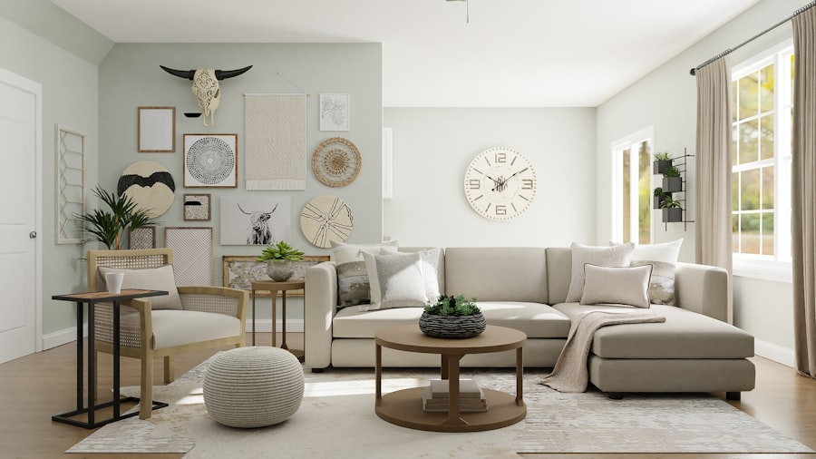

Qualité
Nous privilégions les matières nobles et les finitions soignées. Chaque produit doit mériter sa place dans votre garde-robe.

Depuis 2018
Une histoire d'élégance, de passion et d'exigence.
Origines
Kardiv voit le jour au cœur de Paris, dans un petit atelier du Marais. L'idée est simple : créer une maison de luxe accessible par son esthétique, exigeante par ses matières. Dès les premières collections, l'attention portée aux détails et la recherche olfactive font la différence.
Aujourd'hui, Kardiv incarne une élégance discrète mais affirmée. Chaque création est pensée pour durer, traverser les saisons et devenir un classique du dressing féminin.

Savoir-faire
Nous sélectionnons nos tissus et nos essences avec la même exigence. Soie, cachemire, cuir grainé, essences rares : chaque matière est choisie pour sa qualité, sa durabilité et sa beauté au toucher.
Nos parfums sont composés en collaboration avec des parfumeurs indépendants, en petites séries, pour préserver leur caractère unique.
Nos valeurs
Nous privilégions les matières nobles et les finitions soignées. Chaque produit doit mériter sa place dans votre garde-robe.
Nos créations ne suivent pas les modes. Nous concevons des pièces que vous porterez encore dans dix ans.
Nous produisons en petites séries, limitons le gaspillage et travaillons avec des fournisseurs européens soigneusement choisis.